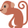

السكون
الدرس 1 من 3 — القراءة
السكونعلامة صغيرة مستديرة (ـْ) توضع فوق الحرف، فنقف عليه ولا نحرّكه: أَ + بْ = أَبْ.
اضغط واستمع
كلمات فيها سكون

شَمْسٌ

كَلْبٌ

قِرْدٌ

بَحْرٌ

نَجْمَةٌ

وَرْدَةٌ
الحرف الساكن لا يُنطق وحده: نقرؤه مع الحرف المتحرّك الذي قبله: كَلْ + بٌ = كَلْبٌ.
أُطبّق
1استمع، ثمّ اختر ما تسمعه:
2استمع، ثمّ اختر ما تسمعه:
3أين الحرف الساكن في «كَلْبٌ»؟
4أين الحرف الساكن في «بَحْرٌ»؟
5أين الحرف الساكن في «نَجْمَةٌ»؟
6اختر الكلمة التي فيها سكون:
7استمع إلى الكلمة، ثمّ اختر الصورة:
إجابات صحيحة من أول محاولة:
أتمرّن أكثر
أستمع، ثمّ أكتب ما أسمع:
أستمع، ثمّ أكتب ما أسمع:
✓ أنهيتَ هذا الدرس
الرسوم: Twemoji (CC-BY 4.0) وFluent Emoji من Microsoft (MIT). الأصوات: صوت عربي اصطناعي.